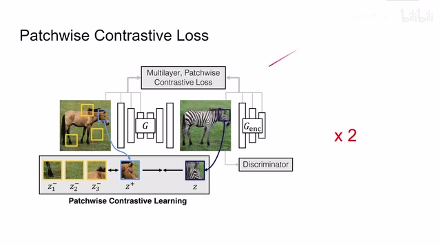
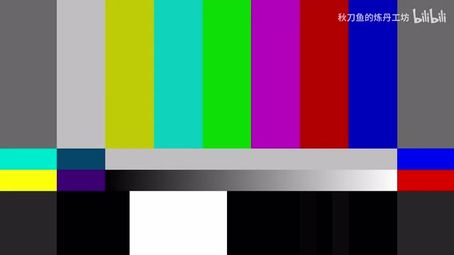
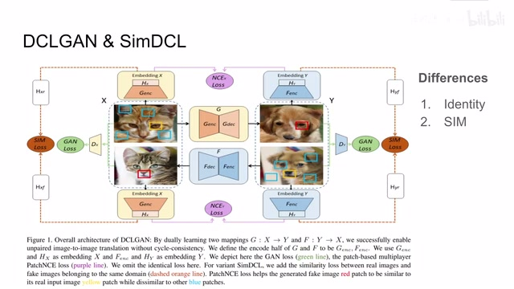
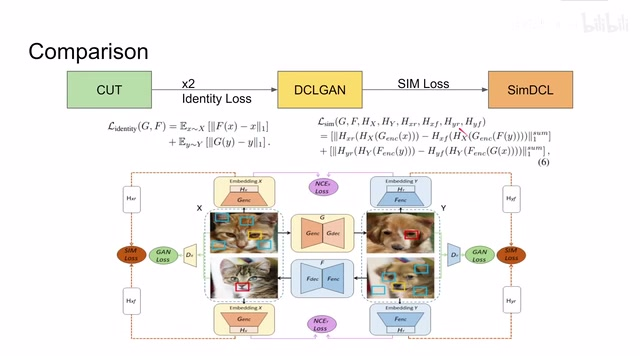
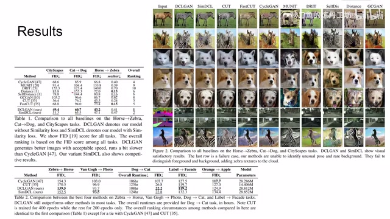
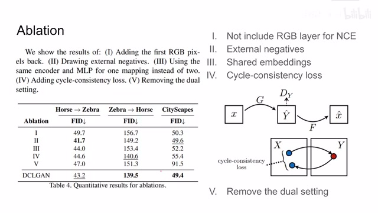
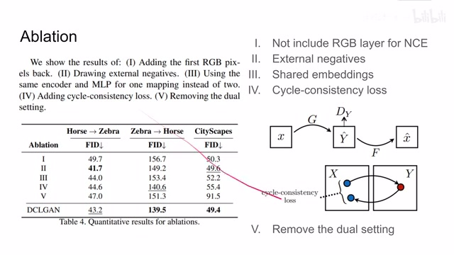
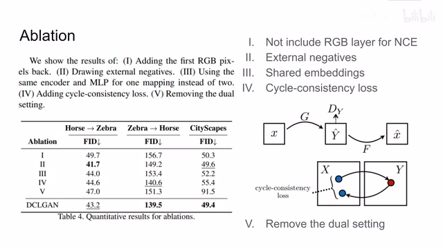
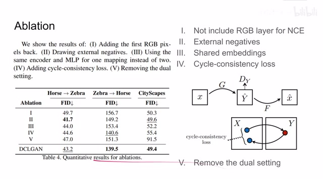
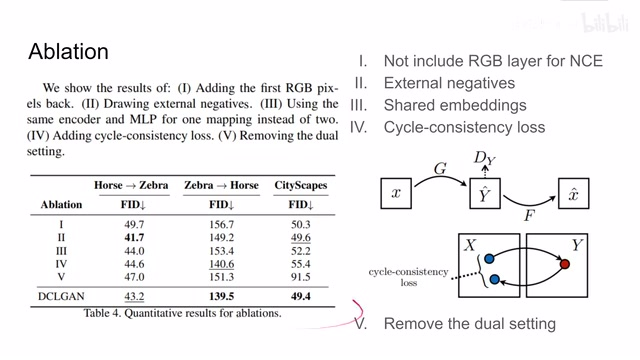

← 返回阅读库 · 原论文目录
论文讲解阅读文档 · 表征学习 · v155
DCLGANSimDCL Dual Contrastive Learning[2104.07689]
视频时长 00:06:01；讲解文字 2,767 字符；提取讲解画面 12 张。按视频原顺序阅读，每段文字保留时间戳。
文字来自整段视频的自动语音转写，按自然停顿分段，并与 PPT / 论文页面 / 演示画面对齐。未将讲解压缩为摘要；术语、数字和口述公式请结合画面及原论文核对。 阅读稿已校正规范部分明确术语误识别；原始逐字稿和每处修改记录另行保留。
讲解画面为源视频截图（640×360），不是可编辑 PPT 文件。全片按每秒 2 帧扫描内容变化，逐步展开页保留；连续动画保留代表画面。清晰度受源视频限制。
下载完整资料包 · 含离线 HTML、PDF、Word、全部 PPT 画面和字幕。
原论文与材料
Dual Contrastive Learning for Unsupervised Image-to-Image Translation · 下载完整 PDF（16 页）
按时间阅读
00:00:00–00:00:10 · 画面 001
 00:00:00–00:00:10 · 画面 001
00:00:00–00:00:10 · 画面 001大家好,今天我们来快速说一篇论文 Dual Contrastive Learning for unsupervised image-to-image translation。那么你从标题就可以看出来,这就是两个 CUT 嘛。我们直接来看,这个是 CUT,乘以 2 就是这篇论文。好,那今天的视频就到这里,大家再见。那么当然事情并没有这么简单,我们来看到作者提供的流程图。那么首先这里我们有 X domain 和 Y domain 这两个集合的图像。
00:00:10–00:00:17 · 画面 002

00:00:10–00:00:17 · 画面 00200:00:17–00:00:18 · 画面 003

00:00:17–00:00:18 · 画面 00300:00:18–00:02:08 · 画面 004

00:00:18–00:02:08 · 画面 004那么从 x 到 y 呢，我们叫 j；从 y 到 x 呢，我们叫 f。相当于我们现在维护了两个这个 generator，用来做这个图像的 translation。那么与之相对呢，我们就要有对应的 discriminator。那这个 dy 呢，就是看 y domain 的图像是不是真的。那么 DX 呢，就是看 XDomain 的图像是不是真的。有 Generator 有 Discriminator。那么很显然，我们首先就会有这个 GAN loss，这个是最经典的 GAN 的配置。那么随后呢，我们再加入这个 InfoNCE，也就是之前 CUT 他提出的这个 Patchwise InfoNCE 的 loss。你可以看到呢，这里呢使用了相应的 Generator Encoder 加上相应的 Head，那么把里面的 Patch 呢，提出一些 Feature。
然后他们相互的做 InfoNCE。这一块，如果你不熟悉，非常推荐你去看我们之前 CUT 这篇论文的解析，这里我就不再做过多的介绍了。那么以上就是 CUT 乘以 2 对吧？那么除此之外，我们除去 discriminator 之外，还可以用另一种方式去衡量我们生成的图像和原始图像的相似程度。那么这个方式就是作者在每个 patch 他提出了 feature 之后，再加上几层 MLP，也是期望把我们的 feature 投到 latent space 里面。通过计算 real image 和 fake image 它们之间的 latent representation 之间的距离，那么得到一个 similarity。那么这个 similarity 据作者说，可以帮助我们避免 mode collapse。
好了，那么我们下面就看具体本文的作者是怎么样把自己的方法区别于这个 CUT 之前的方法的。那么首先我们看到在原来的 CUT 的基础上，你把它从左到右从右到左乘以 2 对吧？那你就得到这个 dclgan，也就是本文提出的第一种方法。同时呢，这里作者针对这个 identity loss 呢做了一点小修改。
00:02:08–00:03:04 · 画面 005

00:02:08–00:03:04 · 画面 005那么在原来的这个 CUT 论文中呢，他 identity loss 呢也是一个 patchwise nce。那这里呢，本文作者说啊，不要这么复杂，简单一点，我们直接使用 L1 distance 那作为这个 identity loss 那就可以了。那么从这个 DCLGAN 呢到这个 SimDCL 呢，作者呢就是在原来的基础上加了这个橙色的这个 sim loss。也就是说呢，把我们的这个 patch embedding 通过再一个 mlp 给它投到一个 latent space 里面。
然后直接算真实图像和生成的图像它们之间 L1 distance 这个作为我们的 similarity loss。加上这个 similarity loss 就得到 SimDCL。可以看到本文的思路真的是非常的直接。那么我们直接看到结果，这里作者对比了本文的方法还有之前的各种各样的方法。可以看到在马到斑马的这一张图像上，大家依然翻车。
00:03:04–00:03:43 · 画面 006

00:03:04–00:03:43 · 画面 006因为我们的这个 model 呢，不太能分清这个云彩和这个斑马或者是马它们的区别。那接下来说更多有数值上的东西呢，可以看到这里有四个数据集。这里呢做着对比的这个 FID 肯定是本文提出的方法 outperform 之前的方法，毕竟它整了这么复杂一个 model。本文运算的速度呢，也是大幅的慢于原来的这个 CUT。那么更多关于模型参数啊还有运行时间对比呢，你可以看到这个表格。
00:03:43–00:05:08 · 画面 007

00:03:43–00:05:08 · 画面 007那么随后呢，就是本文我认为最有价值的部分，就是这里作者做了一个 ablation。这里呢，作者测试了五种不同的配置来帮我们确定说哪些部分是重要的。那首先第一个我觉得是最有意思的就是就是这个 not include RGB layer。那在一开始我们计算这个 patchwise NCE 的时候呢，比如在 CUT 那篇论文里面，我们是把 generator encoder 每一层包括 RGB 的图像也都拿出来做这个 patchwise contrastive loss。
但是因为在 RGB 层我选一个像素它就只代表那一个像素用它来做 contrast loss 实在是影响我们分类器的性能于是作者说我把第一层 RGB 这层去掉了可以看到相对于加上 RGB 的性能得到了很大的提升第二个是 external negatives 就是我们在计算 PatchNCE 的时候是指来源于本图片还是来源于这个 batch 里面的其他的图像那显然在这个问题上呢它的影响呢有一点反复可以看到呢从斑马变回马的时候呢这个不使用这个 external negatives 的性能呢有一定的提升其他的时候呢都相对比较接近那第三个呢是使用这个 embedding 那假如我的两个 generator 的 encoder 呢都是一样的然后呢它使用的 mlp 把这个 patch 投到 latent space 中的 mlp 也是一样的那很显然这种做法呢会损失掉我们的性能
那么第 4 个呢是这个 cycle consistent loss 什么 cycle consistent loss 呢这个来自于 CycleGAN 一个 x domain 的原始图像变到 y domain 然后呢再变回来
00:05:08–00:05:09 · 画面 008

00:05:08–00:05:09 · 画面 00800:05:09–00:05:41 · 画面 009

00:05:09–00:05:41 · 画面 009那这个时候呢它跟原始图像的区别这个 loss 呢我们叫 cycle consistent loss 那这里呢作者发现加上它呢对我们的性能呢并没有显著的提升那这里呢作者猜测因为说我们的 InfoNCE 已经能够把这一个 cycle consistent 这种感觉呢给它体现出来了所以呢在这里加上它这个 loss 呢就显得没有那么必要那么最后呢就是这个 dual setting 也就是作者小改一下 cut 得到的结果
00:05:41–00:05:42 · 画面 010

00:05:41–00:05:42 · 画面 010那很显然呢本文提出的方法就是作者测试出了这种组合呢那 outperform 这个 CUT 的配置好了那么总的来说呢本文的实现的思路呢并不复杂在 CUT 的基础上呢做了一些小的改动刷新了一些这个数字上的性能那么以上就是我对这篇论文的简单的分析感谢您的收看再见
00:05:42–00:06:01 · 画面 011

00:05:42–00:06:01 · 画面 01100:06:01–00:06:01 · 画面 012
00:06:01–00:06:01 · 画面 012转写与来源说明 · 0 个自动复核提示
保留 15 个原始语音片段，0 个片段触发自动复核提示。提示仅用于定位可能的术语、重复或识别问题，不等于已确认错误。
讲解画面为源视频截图（640×360），不是可编辑 PPT 文件。全片按每秒 2 帧扫描内容变化，逐步展开页保留；连续动画保留代表画面。清晰度受源视频限制。
原视频：paper/合集_2026-10-16_表征学习/[论文简析]DCLGANSimDCL Dual Contrastive Learning[2104.07689].mp4
SHA-256：a1f8dcdadf5a84ad6564139d2e17b59aa3fe84fb7157f548734f864a0b2ae006
全文按视频语音与画面制作。原论文可从上方链接下载；完整资料包保留全文、原始逐字稿、字幕和校对记录。